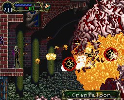

|
Story-Line05
Underground Caverns
เมื่อปราบ Boss : Scylla ได้แล้ว
ไปด้านซ้ายเรื่อยๆ จะเจอน้ำตก
ห้องด้านซ้ายน้ำตกจะมีสวิทต์
เมื่อกดจะมีโครงกระดูก (Skeleton Ape)
ออกมา
มันจะขว้างถังไม้ไปโดนสะพาน ทำให้สะพานไม้พัง
ให้รอสักพักจะมีข้อความปรากฎขึ้นมา
บอกว่า "มีบางอย่างปรากฎใกล้ๆ กับสะพานไม้"
จากนั้นไปทางซ้ายมือของน้ำตก
เดินไปสักครู่จะเจอทางขึ้น ซึ่งจะไปเชื่อมกับโซน Entrance
หากเล่นในระบบ Saturn บริเวณทางเข้า ด้านหน้าของปราสาท
จะมีประตูเล็กๆ บนพื้นเปิดอยู่ สามารถลงไปได้
* - - Begin Saturn
Version Only - - *
Underground Garden
(โซนนี้สามารถมาเข้าได้ทุกเมื่อ หลังจากที่ไปโซน Alchemy
Laboratory แล้ว)
ซึ่งด้านล่างจะมีบอสอยู่ด้วยตัวหนึ่ง
Boss : Skeleton Leader
Level : 36
HP : 444
Exp : 250
Weak : Holy
เมื่อปราบได้ให้กลับไปยังโซน Underground
Caverns อีกครั้ง
* - - End Saturn
Vesion Only - - *
กลับลงมายังโซน Underground Caverns
ไปต่อด้านซ้ายจะเจอ Ferryman (คนแจวเรือ)
(บริเวณนี้จะมีเชิงเทียนที่มีถุงเงิน $2,000 ซ่อนอยู่ด้วย)
นั่งเรือไปจนถึงฝั่งด้านซ้าย
จะมี Relic : Merman Statue
กลับไปยังหน้าห้องก่อนที่จะเจอกับ Scylla
Wyrm
พื้นด้านล่างสามารถทำลายลงไปได้ (WallSecret09)
ลงไปจะเจอคนแจวเรืออีกครั้ง
(หากมาก่อนที่จะมี Merman Statue
จะไม่เจอคนแจวเรือ)
นั่งเรือผ่านไปอีกฝั่งหนึ่ง จะเจอ Relic
: Holy Symbol
ซึ่งทำให้สามารถอยู่ในน้ำได้โดย HP ไม่ลด
สำรวจพื้นที่ใต้น้ำให้หมด
แล้วกลับไปยังสะพานไม้ (อยู่ก่อนถึงน้ำตก)
คราวนี้จะมี โครงกระดูกถือถังไม้อยู่ใกล้ๆ
ให้ล่อมันมาบริเวณสะพานไม้
แล้วให้มันโยนถังไม้ให้โดนสะพานไม้
จะทำให้สะพานไม้พัง สามารถลงไปได้ จะเจอโซนใหม่
Abandoned Mine
ลงไปจะเจอบอสทันที
Boss : Cerberos
Level : 24
HP : 800
Exp : 1,500
Weak : Ice
Absorb : Fire
วิธีปราบ
ง่ายมาก ให้ยืนบนแท่น
แล้วขว้าง Sub-weapon ลงมา
ไม่ว่าจะเป็น "Holy Water" หรือ "มือ" ก็ได้
ห้องทางด้านขวาจะมี สวิตช์ อยู่บนมุมด้านขวา
แต่ยังไม่สามารถกดเปิดได้
ให้ลงมาด้านล่าง ห้องด้านซ้ายจะมี Relic
: Demon Card
ซึ่งเป็น Familar ให้เรียกใช้ Demon
แล้วกลับไปยังสวิตท์ด้านบน
Demon จะกดสวิตท์ให้ (WallSecret10) สามารถเข้าไปยังห้องด้านขวาได้
ห้องด้านขวาล่าง บริเวณกำแพงด้านซ้ายสามารถทำลายได้
เข้าไปจะเป็นห้องลับ (WallSecret11)
กลับไปยังทางแยก ด้านขวาจะมีทางวาร์ป (รูปงู)
ลงไปด้านล่าง จะเจอโซนใหม่
Catacombs
ไปทางด้านซ้ายจะเจอห้อง Save
ห้องด้านซ้ายห้องเซฟ สามารถทำลายกำแพงได้
จะมี Cat-eye Circlet ซ่อนอยู่
ไปทางด้านขวา จะเจอห้องที่มืด
ให้แปลงร่างเป็นค้างคาว แล้วยิงโซน่า (กดปุ่ม "สามเหลี่ยม")
จะสามารถเห็นทางได้ ซึ่งมีแต่หนาม
ให้บินหลบหนามไปทางด้านขวา จนสุดทาง
ด้านในสุดจะเจอเกราะ Spike Braker
ซึ่งเมื่อสวมใส่ สามารถเดินลุยดงหนามได้
ไปต่อทางด้านซ้ายมือ
ห้องด้านบนจะมีกำแพงที่สามารถทำลายเข้าไปได้ (WallSecret12)
ไปต่อจะเจอบอส
Boss : Granfaloon (Core)

Level : 28
HP : 400
Exp : 3,000
Strong : Dark
Weak : Holy
Boss : Granfaloon (Shell)
HP : 400
Strong : Dark
วิธีปราบ
Granfaloon จะมีเปลือก (Shell) ป้องกันอยู่
ต้องทำลายเปลือกนอกก่อน จึงจะสามารถโจมตีส่วนกลางได้
ให้ขึ้นไปยืนบนแท่นทางด้านซ้ายมือ
แล้วใช้ท่า "Hellfire" หรือ "Tetra Spirit"
โจมตี
หรือใช้ Sub-weapon "Axe" หรือ "Holy Cross" ก็ได้
Next
to Ending A
|